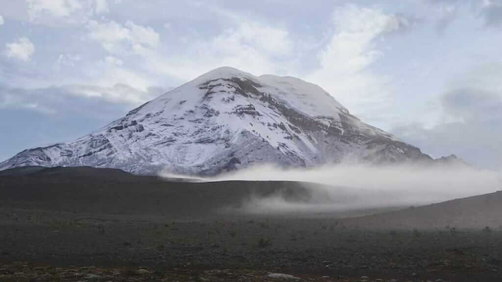

Montañas Ecuador

Sobre Nosotros
Inti Cumbres es una empresa dedicada a ofrecer experiencias únicas de montañismo en Ecuador. Nuestro equipo de guías expertos te llevará a explorar las cumbres más impresionantes del país, asegurando una aventura segura y emocionante.